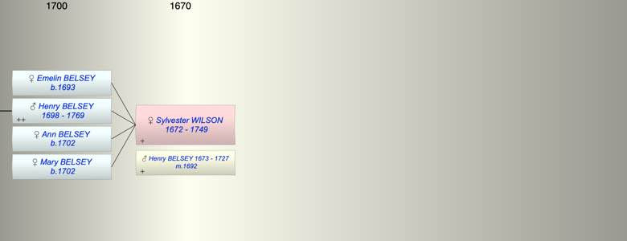

| [Index] |
| Sylvester Emelin WILSON (1672 - 1749) |
|  |
| b. 1672 |
| m. 27 Feb 1692 Henry BELSEY (1673 - 1727) at St Alphage, Canterbury |
| d. 1749 aged 77 |
| Children (4): |
| Emelin BELSEY (1693 - ) |
| Henry BELSEY (1698 - 1769) |
| Ann BELSEY (1702 - ) |
| Mary BELSEY (1702 - ) |
| Grandchildren (4): |
| John BELSEY (1724 - 1803), Henry BELSEY (1726 - 1797), George BELSEY (1727 - 1796), Alexander BELSEY (1729 - 1794) |
| Events in Sylvester Emelin WILSON (1672 - 1749)'s life | |||||
| Date | Age | Event | Place | Notes | Src |
| 1672 | Sylvester Emelin WILSON was born | Note 1 | |||
| 27 Feb 1692 | 20 | Married Henry BELSEY (aged 19) | St Alphage, Canterbury | Note 2 | |
| 1693 | 21 | Birth of daughter Emelin BELSEY | Note 3 | ||
| 1698 | 26 | Birth of son Henry BELSEY | Note 4 | ||
| 1702 | 30 | Birth of daughter Ann BELSEY | Coldred | Note 5 | |
| 1702 | 30 | Birth of daughter Mary BELSEY | Coldred | bap 21 Jun 1702 Coldred ex FS | |
| 1727 | 55 | Death of husband Henry BELSEY (aged 54) | Coldred | ||
| 1749 | 77 | Sylvester Emelin WILSON died | |||
| Personal Notes: |
|
was she Emelin Sylvestra Belsey ( Wilson) b Nonington
there is Sylvestra Willson Emlin bap dau of John and Emlin |
| Created on a Mac™ using iFamily for Mac™ on 8 Oct 2023 |